Chapters 1–2
Describing data
Chapter 3
Decision tools
Chapters 4–5
Testing differences
Chapters 6–8
Strategy and ethics
Chapters 9–12
Relationships
Chapters 13–15
Measurement models
The decision question
The events manager asks two questions of the same 200 customers. Do the more satisfied customers say they will come back? And does the ticket type a customer buys decide whether they attend?
Investigation
1 Spearman correlation
⏱ 40 min
Ratings as ranks, rho by hand and in JASP, choosing Pearson or Spearman
Acquisition
2 Chi-squared test types
⏱ 30 min
Observed and expected counts, χ² by hand, goodness-of-fit test or test of association
Investigation
3 Goodness-of-fit task
⏱ 35 min
Ticket sales against the marketing plan in JASP, then the gender split
Production
4 Association task
⏱ 40 min
Ticket type and attendance in JASP, Cramér’s V, reports and recap
After studying these chapters you should be able to:
Question for the room
Customers rate satisfaction and their intention to return on 1 to 5 scales. Do the more satisfied customers also say they will come back?
| Venue | Rank by A | Rank by B | d (A − B) | d² |
|---|---|---|---|---|
| A | 1 | 2 | −1 | 1 |
| B | 2 | 1 | 1 | 1 |
| C | 3 | 4 | −1 | 1 |
| D | 4 | 3 | 1 | 1 |
| E | 5 | 6 | −1 | 1 |
| F | 6 | 5 | 1 | 1 |
| n = 6 venues | Sum of d² | 6 |
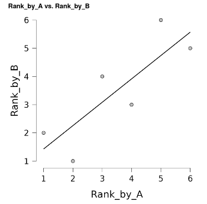
Open the deck on your laptop or phone. Fill in d, d², the formula and rho, then press Check.
| Event | Attendance rank | Satisfaction rank | d | d² |
|---|---|---|---|---|
| 1 | 1 | 3 | ||
| 2 | 2 | 1 | ||
| 3 | 3 | 2 | ||
| 4 | 4 | 5 | ||
| 5 | 5 | 4 | ||
| Sum of d² |
rho = 1 − (6 × ) ÷ ( × ) =
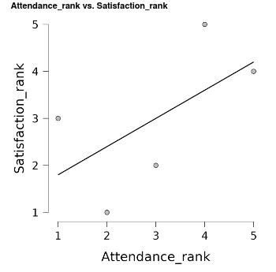
Your answer: rho = ____, a ____ ____ relationship. Events with a higher attendance rank tended to have a ____ satisfaction rank.
Sample: rho = .60, a strong positive relationship. Events with a higher attendance rank tended to have a higher satisfaction rank, so the events manager can use attendance as an early sign of which events satisfy customers, and look at why event 1 drops from 1st to 3rd on satisfaction.
You used Pearson’s r with chapter 9 for 2 scale variables. Now you choose between Pearson’s r and Spearman’s rho.
| Variables | Coefficient |
|---|---|
| Both scale, straight-line pattern | Pearson’s r |
| One or both ordinal: 1 to 5 ratings, ranks | Spearman’s rho |
| Scale, curved but steady rise or fall | Spearman’s rho |
| Scale, with outliers that pull r | Spearman’s rho, beside r |
Choose the coefficient and the reason for each pair, then press Check.
| Pair | Coefficient | Reason |
|---|---|---|
Age and Spending |
||
Content_Q1 and Value_Q1 |
||
| Two judges' rankings of 10 trade stands | ||
Satisfaction_Pre and Satisfaction_Post |
Decision rule for satisfaction and intention to return
| If | Decision | Write |
|---|---|---|
| p below .05 | Reject H₀ | Satisfaction and intention to return are related, in the direction of rho |
| p .05 or above | Retain H₀ | No evidence of a relationship |
Regression → Classical → Correlation
Satisfaction and Return_Intention into Variables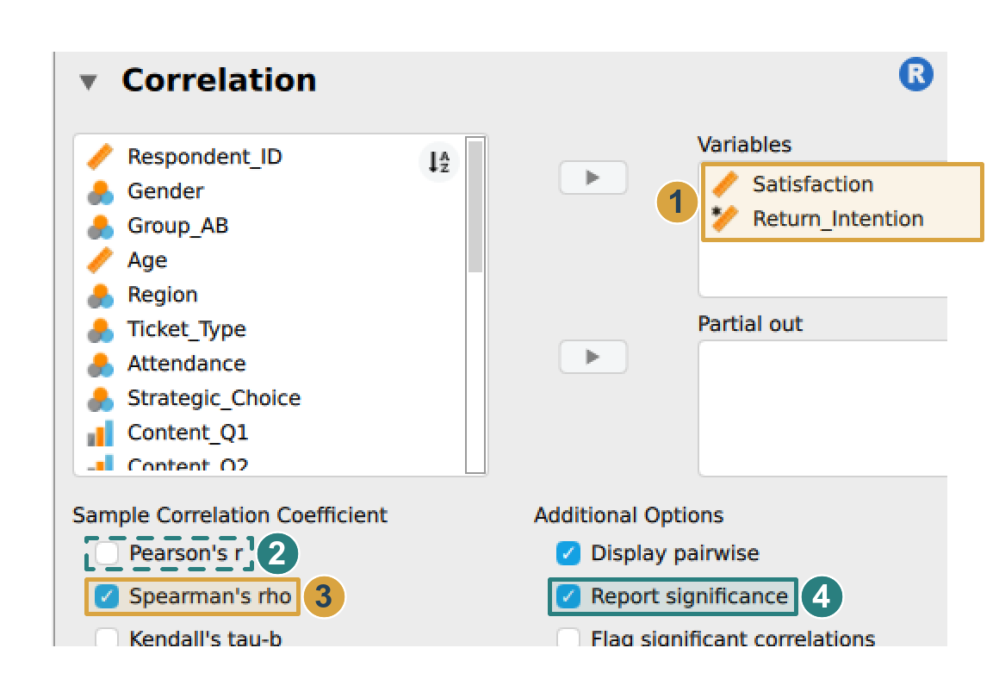
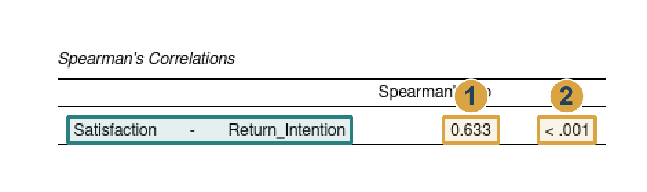
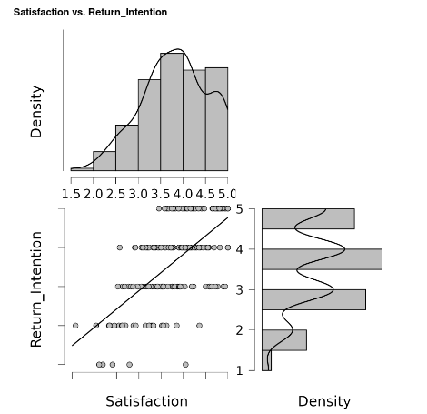
Decision on satisfaction and intention to return
p < .001 is below .05, so we reject H₀. Satisfaction and intention to return are positively related, rs(198) = .63, p < .001.
Report sentence for satisfaction and intention to return
Satisfaction and intention to return were strongly and positively related, rs(198) = .63, p < .001. Customers who are more satisfied tend to say they will return.
4 minutes
Content_Q1 and Return_Intention in Variables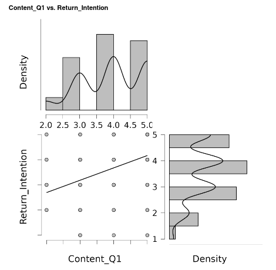
Are content ratings related to intention to return?
Your answer: rs(____) = ____, p ____. The p-value is ____ .05, so we ____ H₀.
Sample: content ratings and intention to return are positively related, rs(198) = .45, p < .001. Customers who rate the content highly tend to say they will return, so the manager can protect repeat visits by keeping programme content strong and checking content ratings after every event.
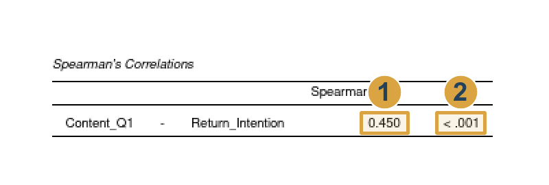
3 minutes
Value_Q1 and Return_Intention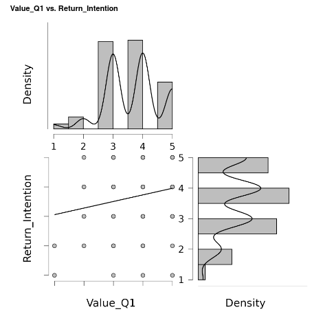
Follow the rule for choosing a coefficient, fill in each row, then press Check.
| Step | Your answer |
|---|---|
| 1. Type of both variables | |
| 2. Coefficient the rule picks | |
| 3. Spearman's rho | |
| 4. Its p-value | |
| 5. Decision | |
| 6. Pearson's p, for comparison | |
| 7. Pearson's decision |
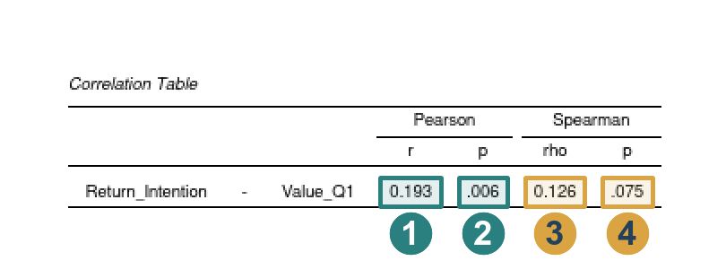
8 minutes
| Test | Question it answers | Example today |
|---|---|---|
| Chi-squared goodness-of-fit test | Does one categorical variable match expected proportions? | Ticket mix against the 50/30/20 plan |
| Chi-squared test of association (also called the test of independence) | Are two categorical variables related? | Ticket type and attendance |
Question for the room
The plan expected 50% Standard, 30% Student and 20% VIP tickets. We sold 124, 46 and 30 of 200. Is the mix different from the plan?
Decision rule for the ticket mix
| If | Decision | Write |
|---|---|---|
| p below .05 | Reject H₀ | The ticket mix differs from the plan |
| p .05 or above | Retain H₀ | No evidence that the mix differs from the plan |
| Ticket type | O | E | O − E | (O − E)² ÷ E |
|---|---|---|---|---|
| Standard | 124 | 100 | 24 | 576 ÷ 100 = 5.76 |
| Student | 46 | 60 | −14 | 196 ÷ 60 = 3.27 |
| VIP | 30 | 40 | −10 | 100 ÷ 40 = 2.50 |
| Total | 200 | 200 | 0 | χ² = 11.53 |
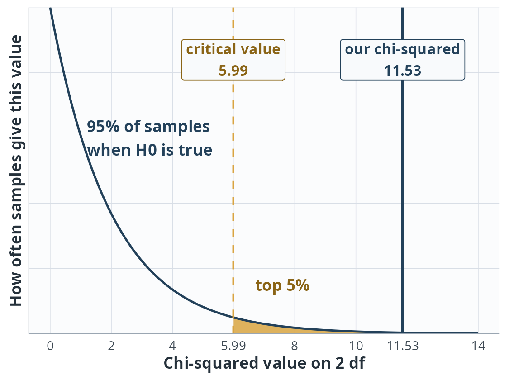
| df | 1 | 2 | 3 | 4 | 8 |
|---|---|---|---|---|---|
| Critical | 3.84 | 5.99 | 7.81 | 9.49 | 15.51 |
| Test | JASP menu |
|---|---|
| Chi-squared goodness-of-fit test | Frequencies → Multinomial Test, Custom expected proportions (χ² test) |
| Chi-squared test of association | Frequencies → Contingency Tables, tick χ² |
| Binomial Test | one variable with 2 categories against a stated share. Exact p from the binomial model in chapter 3. With 2 categories the goodness-of-fit test gives almost the same p, so we use χ² |
Question for the room
30 of 200 customers registered and stayed away. Does the attendance rate depend on the ticket type?
| Ticket type | Attended | Registered only | Total |
|---|---|---|---|
| Standard | 103 | 21 | 124 |
| Student | 44 | 2 | 46 |
| VIP | 23 | 7 | 30 |
| Total | 170 | 30 | 200 |
Decision rule for ticket type and attendance
| If | Decision | Write |
|---|---|---|
| p below .05 | Reject H₀ | Attendance depends on ticket type |
| p .05 or above | Retain H₀ | No evidence that attendance depends on ticket type |
Write-up
df = (3 − 1) × (2 − 1) = 2, critical value 5.99. χ² = 6.09 is larger than the critical value, so we reject H₀. Attendance is associated with ticket type.
Managerial decision
Student holders almost all attend (44 of 46). VIP holders stay away most (7 of 30), so send them a reminder and a seat-release deadline, and fill released seats from a waiting list.
Choose the test for each question, then press Check.
| Question | Test |
|---|---|
| 1. Is the share of VIP tickets different from the 20% in the plan? | |
| 2. Is region related to whether a customer attends? | |
| 3. Do the five regions supply equal numbers of customers? | |
| 4. Do customers who rate value highly also rate content highly? |
Region has 5 categories and Ticket_Type has 3. JASP gives χ² = 6.81, p = .558. Read the critical value for your df from the critical value table.
Your answer: df = (____ − 1) × (____ − 1) = ____, critical value ____. χ² = 6.81 is ____ than the critical value, so we ____ H₀.
Sample decision: region and ticket type are not associated (p = .558). One ticket mix and one marketing plan can serve all 5 regions, and no region needs its own pricing.
Frequencies → Multinomial Test
This is the chi-squared goodness-of-fit test
Ticket_Type into Factor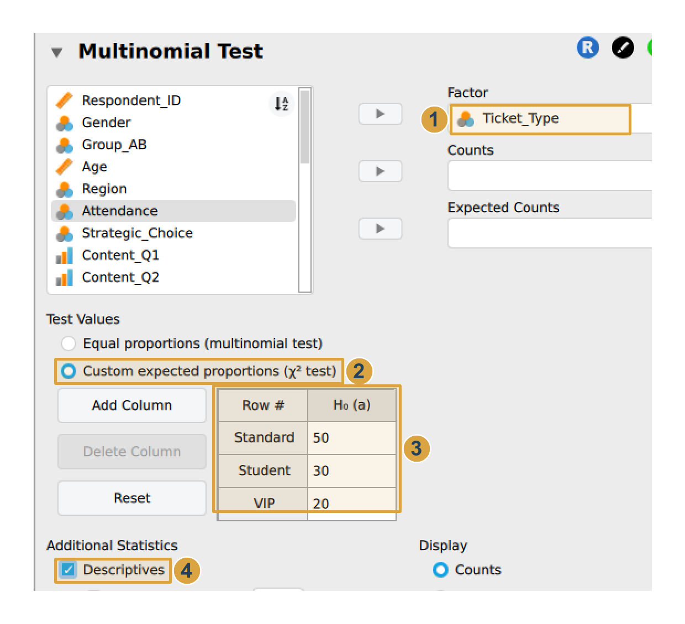
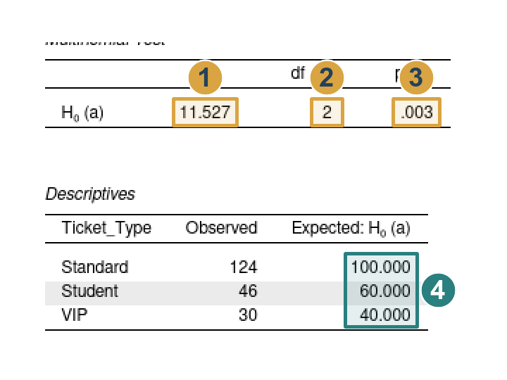
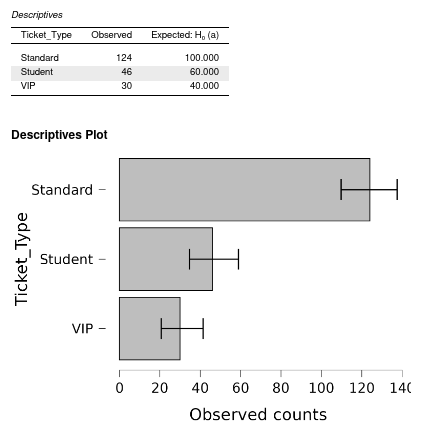
Decision on the ticket mix
p = .003 is below .05, so we reject H₀. The ticket mix differs from the plan: more Standard and fewer Student and VIP tickets, χ²(2, N = 200) = 11.53, p = .003.
Report sentence for the ticket mix
A chi-squared goodness-of-fit test found that ticket sales differed from the planned mix, χ²(2, N = 200) = 11.53, p = .003. We sold 124 Standard tickets against 100 planned.
112 female and 88 male customers. Calculate χ² against a 50:50 split, by hand, before you open JASP.
Your answer: each expected count is ____. χ² = ____ + ____ = ____, on ____ df.
Sample decision: 112 against 100 expected and 88 against 100 expected, a gap of 12 either way. Hold any gender-targeted campaign until question 5 shows whether this gap is larger than chance.
4 minutes
Gender in Factor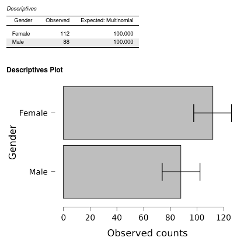
Does the customer base differ from a 50:50 split?
Your answer: χ²(____, N = 200) = ____, p = ____. The p-value is ____ .05, so we ____ H₀.
Sample decision: a 112 to 88 split could arise by chance from a 50:50 customer base (p = .090). There is no evidence for a gender-targeted campaign, so keep one campaign for all customers.
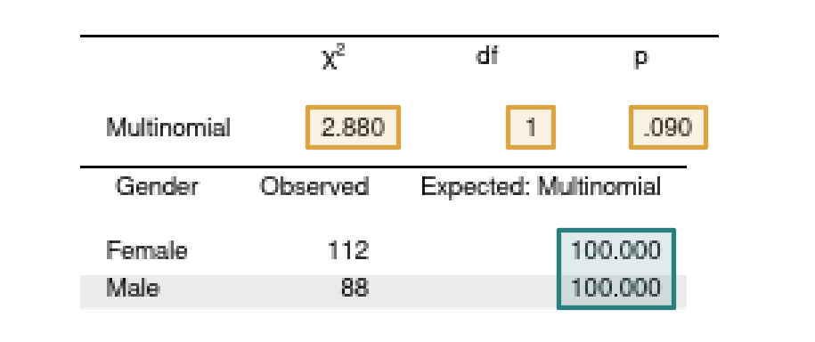
8 minutes
Contingency Tables with χ² ticked is the chi-squared test of association
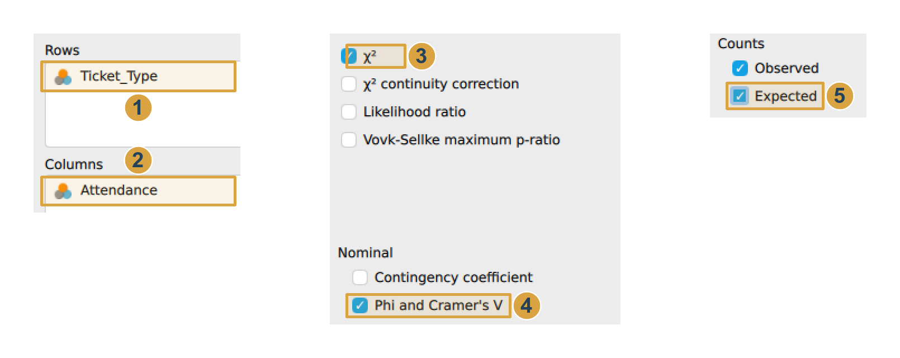
Frequencies → Classical → Contingency Tables: 1Ticket_Type in Rows 2Attendance in Columns 3χ² ticked 4Phi and Cramer’s V 5Cells → Expected
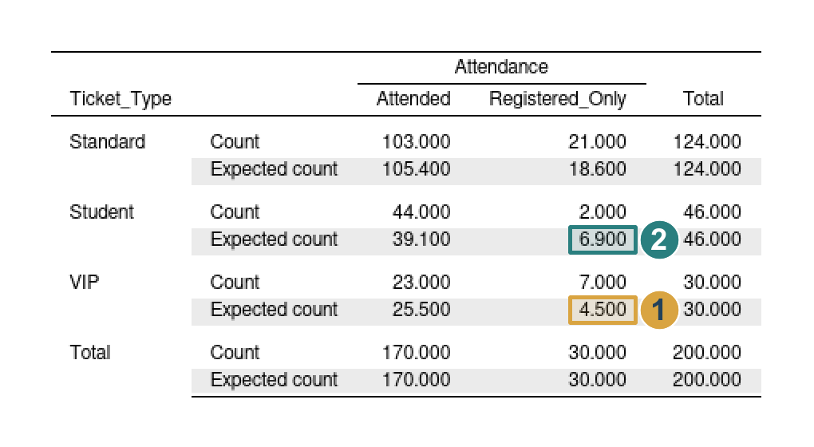
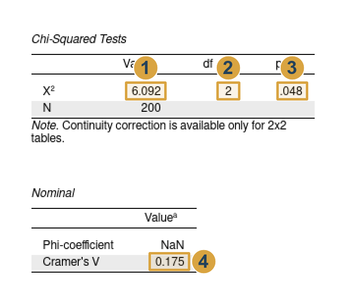
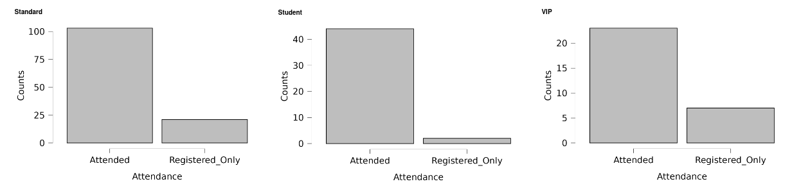
Attendance in Variables, Ticket_Type in Split, Basic Plots → Distribution plotsDecision on ticket type and attendance
p = .048 is below .05, so we reject H₀. Attendance is associated with ticket type, a small association, χ²(2, N = 200) = 6.09, p = .048, V = .17.
Report sentence for ticket type and attendance
A chi-squared test of association found a small association between ticket type and attendance, χ²(2, N = 200) = 6.09, p = .048, Cramér’s V = .17. 1 of the 6 expected counts was below 5. Student holders attended most often.
4 minutes
Gender in Rows, Attendance in ColumnsAttendance split by Gender, Distribution plots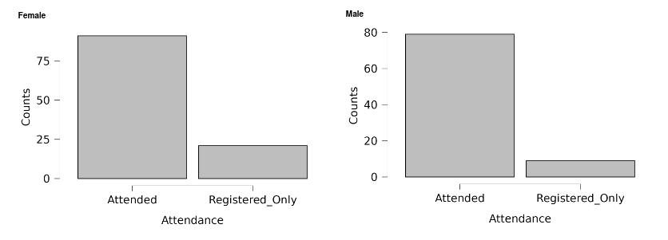
Is attendance associated with gender?
Your answer: χ²(____, N = 200) = ____, p = ____. The p-value is ____ .05, so we ____ H₀.
Sample decision: attendance is not associated with gender (p = .094). One reminder plan serves female and male customers.
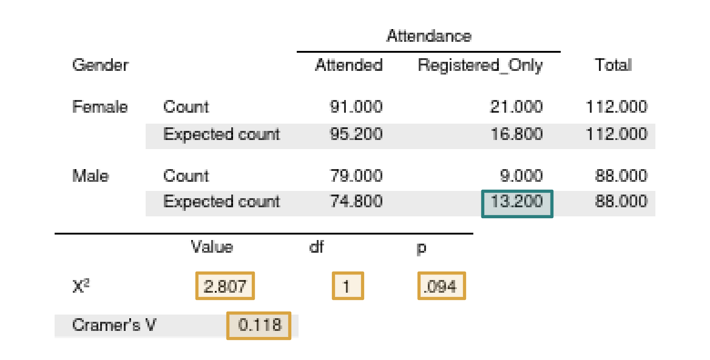
Calculate Cramér’s V from χ² = 2.807, then say whether we can rely on the test.
Your answer: V = √(____ ÷ (200 × 1)) = ____, a ____ association. The smallest expected count is ____, which is ____ 5, so the test ____ be relied on.
Sample decision: 91 of 112 female and 79 of 88 male customers attended. A gap this size could be sampling variation, so one reminder plan serves both.
Five selection rules